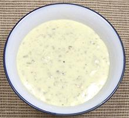

 |
Tartar SauceEuro/American | ||||
| Makes: Effort: Sched: DoAhead: |
1 cup ** 20 min Yes |
A popular sauce served with fried fish, oysters, scallops and the like. Use Pure olive oil, not Extra Virgin which could overpower. See Notes-1,2 on safety. | |||
|
------- 1 1 1 1 few ------- 1/2 1/8 1 1/4 ------- 2 1/2 2-1/2 |
--- T T T T --- t t t t --- c T |
-- Flavoring Olives green Capers Pickles sour Shallot Tarragon fresh leaves -- Spices Dry English Mustard Pepper Sugar powdered Salt ----------- Egg Yolks Olive Oil pure Vinegar white wine |
Make: - (20 min)
|